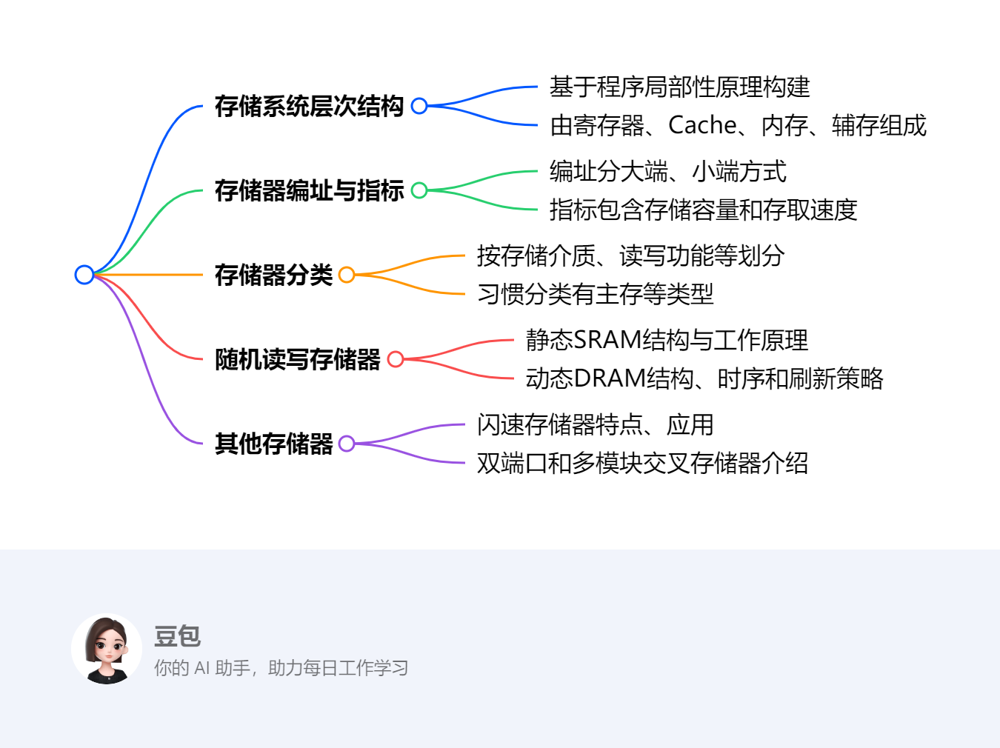
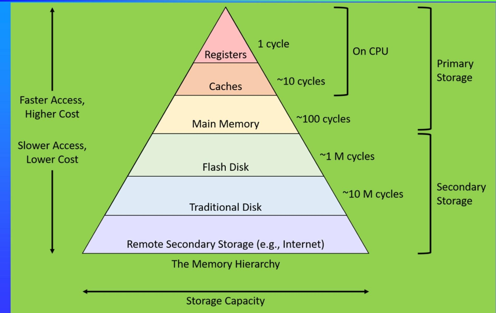

第三章：储存系统¶
概述¶
一段话总结¶
本文围绕计算机存储系统展开，存储系统基于程序局部性原理构建层次结构，包含寄存器、Cache、内存、辅存等。内存技术指标有存储容量和存取速度 ，其编址方式分大端、小端。存储器分类多样，按存储介质、读写功能等划分。随机读写存储器包括静态和动态两种，各有其结构、时序和刷新策略。此外，还介绍了闪速存储器、双端口存储器和多模块交叉存储器的特点、应用等内容。
思维导图¶
¶
详细总结¶
- 存储系统的层次结构
- 原理基础：依据程序的局部性原理，包括时间局部性和空间局部性，构建存储系统层次结构。
- 层次组成：从高到低依次为寄存器、Cache、内存（主存）、辅存（外存）。各级存储的访问速度逐渐变慢、成本降低、容量增大。例如，寄存器访问速度小于1ns，Cache访问时间为1 - 5ns，内存访问时间为10 - 50ns，Flash Disk访问时间为0.1ms，Traditional Disk访问时间为10ms 。
- 内存储器的相关知识
- 编址方式：有大端（Big - endian）和小端（Little - endian）之分。大端模式下，数据高位存于低地址；小端模式则相反。
- 技术指标：主要有存储容量和存取速度，存取速度包括访问时间和存取周期。
- 分类方式：分类方式多样，按存储介质、与CPU的耦合程度、读写功能、掉电后信息保持情况、数据存取随机性、访问串并行性、时钟特性、访问方式、信息储存方法、功能等进行分类。习惯上分为主存等。
- 总体结构：主存由控制总线、控制电路、存储体、读写电路、MDR（数据寄存器）、驱动器、译码器、MAR（地址寄存器）等组成。
- 随机读写存储器
- 静态随机存取存储器（SRAM）：有其特定的结构，包括地址反相器、译码器、驱动器、存储矩阵等。可进行位扩展、字扩展和字位扩展。读、写周期各有相应时序。
- 动态随机存取存储器（DRAM）：管脚信号有A0 - A9、RAS、CAS等。具有刷新控制与定时电路，刷新策略有集中式刷新和分散式刷新。读、写、刷新周期均有时序要求。
- 其他存储器
- 闪速存储器（Flash Memory）
- 技术分类：主要有线性闪存和非线性闪存（NOR flash和NAND flash）。两者在读写、擦除、编程、接口方式、信息存储可靠性、可擦除次数和适用场景等方面存在差异 。
- 组织结构与操作：有特定的组织结构和逻辑结构，操作包括读、写、保持、输出禁止、复位等，各操作对应不同的控制信号组合。
- 双端口存储器：有两个独立端口可同时访问，逻辑结构包含两个地址寄存器、译码器、存储体等。读写控制方式分无冲突和有冲突两种，有冲突时需进行仲裁。
- 闪速存储器（Flash Memory）
- 总结：计算机存储系统的层次结构设计，旨在平衡速度、成本和容量。不同类型存储器的特性差异，决定了它们在系统中的不同应用场景。随着技术发展，存储系统不断优化，以满足计算机性能提升的需求。
关键问题¶
- 程序局部性原理如何影响存储系统的层次结构设计？
- 答案：程序局部性原理包含时间局部性和空间局部性。时间局部性指程序中近期被访问的信息可能再次被访问，空间局部性指被访问的信息附近的数据也可能被访问。基于此，存储系统将访问速度快、容量小、成本高的寄存器和Cache放在靠近CPU的位置，用于存储近期频繁访问的数据和指令；而将访问速度慢、容量大、成本低的内存和辅存放在下层，存储大量不常立即访问的数据。这样的层次结构能利用程序局部性，提高存储系统的整体访问效率。
- NOR flash和NAND flash的主要区别有哪些？
| 比较项目 | NOR flash | NAND flash |
|---|---|---|
| 读操作 | 快速随机读 | 以页为单位读 |
| 在线执行指令 | 支持 | 不支持 |
| 擦除方式 | 以区块（sector）或芯片为单位 | 以块（block）为单位 |
| 编程方式 | 以字为单位 | 以页为单位 |
| 接口方式 | 独立的DB和AB | DB、AB复用 |
| 信息存储可靠性 | 高 | 低 |
| 可擦除次数 | 较少 | 约为NOR flash的10倍 |
| 适用场景 | 适用于擦除和编程操作较少而直接执行代码的场合，不适用于纯数据存储和文件存储 | 适用于高容量存储设备，增加控制器后也可用于程序存储 |
- 双端口存储器在读写控制方面，无冲突和有冲突的情况有何不同？
- 答案：无冲突时，双端口存储器的两个端口可根据不同的读写控制信号组合，独立进行数据读写操作，如不同的字节读写、数据写入和读出等。而有冲突时，当两个端口试图同时访问同一存储单元，就需要进行仲裁。仲裁方式包括控制仲裁和地址仲裁，通过BUSY信号等机制来协调访问顺序，避免数据冲突，确保存储系统的正常运行。
存储系统的层次结构¶
多级存储体系的组成¶
该部分内容主要围绕计算机存储系统的层次结构展开，涵盖了发展背景、原理依据、具体组成以及设计目标等方面，具体总结如下：
- 发展背景：早期计算机系统对存储容量和访问速度要求较低，如20世纪70年代中型机存储器为十几kB，个人计算机操作系统MS - DOS为1MB。近年来，随着软件复杂度提升、多媒体与网络技术普及，对存储容量需求不断增大，且CPU工作速度提升更快，与内存速度差距加大。同时，存储器价格较高，在整机成本中占比较大，因此需要在成本和性能间寻求平衡，进而产生了存储器分层策略。
- 程序局部性原理：程序在较短时间内，访问的存储器地址集中在较小范围内。具体分为时间局部性和空间局部性，时间局部性指最近被访问的信息很可能再次被访问；空间局部性指最近被访问信息临近的信息也可能被访问 。该原理为存储系统分层提供了理论依据。
- 存储系统层次结构组成
- 两级存储体系：由内存和外存（辅存）组成。内存速度高、容量小、价格高，由半导体器件构成；外存速度低、容量大、价格便宜。
- 三级存储体系：包括高速缓冲存储器（cache）、主存和辅存，内存由cache和主存组成。其中，寄存器速度极高但数量少。不同层级在容量、访问速度、价格和带宽上差异明显，如寄存器容量为100s Bytes，访问速度小于1ns；磁带容量可达1.5T（每盘），访问时间为1min 。
- 数据传输单元：不同层级间数据传输单元不同，如cache controller传输单元为8 - 128字节，操作系统为512 - 4K字节 。
- cache分类：cache可进一步分为一级（L1）、二级（L2）、三级（L3）cache，还可分为指令cache（I - cache）和数据cache（D - cache）。
- 设计目标：外存主要解决存储容量问题，cache主要解决速度问题，整个存储系统旨在提高性能 - 价格比，使其在速度上接近cache，在容量和价格上接近外存，实现“多快好省”。 
鲲鹏920处理器片上系统的内存储系统¶
这段内容主要介绍了鲲鹏920处理器片上系统的内存储系统，其层次结构包含多级Cache、主存和硬盘，具体如下：
- 多级Cache
- L1 Cache和L2 Cache：每个内核都配有私有的L1 Cache和L2 Cache。其中，L1 I-Cache（指令缓存）和L1 D-Cache（数据缓存）的大小均为64KB ，用于快速存储处理器近期需要执行的指令和处理的数据，提高数据读取速度。L2 Cache大小为512KB，进一步缓冲数据和指令，缓解L1 Cache容量限制，增强缓存性能。
- L3 Cache：采用片内共享架构，每个超级内核集群配置共享的L3 Cache。它是系统级片上三级高速缓存，L3 Cache数据块位于内核集群之外，而标记块作为协议处理模块集成在每个内核集群中。这种设计能降低监听延迟，使多个内核可高效共享数据，提升整个系统的缓存访问效率。
- 主存和硬盘：除了多级Cache，鲲鹏920处理器片上系统的内存储系统还包括主存和硬盘。主存作为计算机运行时数据和程序的主要存储区域，可被处理器直接访问，存储正在运行的程序和处理的数据 。硬盘则用于长期大容量存储数据，如操作系统、应用程序和用户文件等，弥补主存断电数据丢失和容量不足的问题。
内存储器的编址方式¶
该节内容主要介绍了存储器访问和内存的主要技术指标，具体如下：
- 存储器访问：存储器访问每次读写信息量的方式有字寻址、半字寻址和字节寻址。字寻址每次访存读写一个存储字，半字寻址每次访存读写半个存储字，字节寻址每次访存读写一个字节，此处字长设定为4字节。
- 内存的主要技术指标
- 存储容量：指存储器可存储信息的字节数或比特数，通常表示为“存储字数×存储字长” ，即存储单元数与每单元的比特数的乘积。例如，1M比特的存储器可组织成1M×1比特、128K×8比特、256K×4比特等形式。
- 存取速度
- 访问时间（存取时间）TA：是从存储器接收到读/写命令到信息被读出或写入完成所需的时间，它取决于存储介质的物理特性和寻址部件的结构。
- 存取周期TM：在存储器连续读写过程中，一次完整的存取操作所需的时间，也是CPU连续两次访问存储器的最小时间间隔。
- 数据传送速率（频宽）BM：单位时间内能够传送的信息量。若系统的总线宽度为W bit，其计算公式为BM = W/TM（b/s）。
存储器的分类¶
该节内容主要介绍了存储器的多种分类方式，以及内存储器的习惯分类，具体如下：
- 按存储介质分类：分为半导体存储器、磁介质存储器、光存储器。半导体存储器常见于计算机内存；磁介质存储器如磁盘；光存储器如光盘。
- 按与CPU的耦合程度分类：可分为内存（包含主存和cache）和外存。内存与CPU直接相连，速度快，用于存储当前正在运行的程序和数据；外存用于长期存储大量数据，速度相对较慢，如硬盘、U盘等。
- 按读写功能分类：包括读写存储器（RWM）和只读存储器（ROM）。读写存储器允许对其存储内容进行读取和写入操作；只读存储器中的内容一般只能读取，不能随意写入，常用于存储固定的程序或数据。
- 按掉电后信息保持情况分类：有易失性（挥发性）存储器和非易失性（不挥发）存储器。易失性存储器在断电后存储的信息会丢失，如常见的内存；非易失性存储器断电后信息仍能保存，如硬盘、ROM等。
- 按数据存取随机性分类：分为随机存取存储器（RAM）、顺序存取存储器（SAM）和直接存取存储器（DAM）。随机存取存储器可随机访问存储单元，访问时间与存储单元位置无关；顺序存取存储器只能按顺序依次访问存储单元；直接存取存储器对存储单元的访问介于随机存取和顺序存取之间，可直接快速定位到存储区域，但在区域内仍需顺序查找。
- 按访问串并行性分类：有并行存取存储器和串行存取存储器。并行存取存储器能同时对多个存储单元进行读写操作，速度快；串行存取存储器则依次对存储单元进行读写，速度相对较慢。
- 按时钟特性分类：分为同步存储器和异步存储器。同步存储器的操作与时钟信号同步，按固定的时钟周期进行读写；异步存储器的操作不依赖时钟信号，根据控制信号和数据的状态进行读写。
- 按访问方式分类：包括按地址访问的存储器和按内容访问的存储器（CAM，即相联存储器）。按地址访问的存储器通过指定地址来访问存储单元；相联存储器按存储内容的特征进行访问，常用于高速缓存和快速查找等场景。
- 按半导体存储器信息储存方法分类：分为静态（static）存储器和动态（dynamic）存储器。静态存储器利用触发器存储信息，只要电源正常，信息就能稳定保存；动态存储器利用电容存储信息，需要定期刷新以保持信息的正确性 。
- 按功能分类：有系统存储器、显示存储器、控制存储器等。系统存储器用于存储计算机系统运行所需的程序和数据；显示存储器用于存储显示设备所需的图像数据；控制存储器用于存储微程序等控制信息。
- 内存储器的习惯分类
- RAM（易失性半导体读写存储器）：包括静态RAM（SRAM）和动态RAM（DRAM）。SRAM速度快，但成本高、集成度低；DRAM成本低、集成度高，但速度相对较慢，常见的有FastPage DRAM、SDR SDRAM、DDR SDRAM等。
- ROM（非易失性半导体只读存储器）：包括掩膜ROM（MASK ROM）、可编程ROM（PROM） 。PROM又分为一次性可编程ROM（OTP ROM）和可擦除PROM（EPROM） 。EPROM包括紫外线擦除EPROM（UV EPROM）和电擦除EPROM（EEPROM，E²PROM） ，还有闪速存储器（FLASH ROM），如NOR Flash和NAND Flash等。